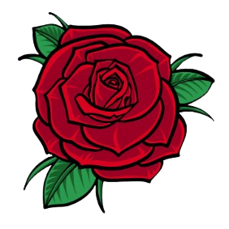

Hace mucho tiempo, mi mundo era gris, sin brillo ni sentido.
Los días pasaban iguales, uno tras otro, como agua que corre sin detenerse,
y yo caminaba sin notar los colores, sin sentir que la vida podía sorprender.
Pero entonces apareciste tú, y todo cambió de repente.
Desde aquel día en que una simple coincidencia nos unió
como algo más que dos personas,
fue como si el sol hubiera salido después de una larga noche.
Lo gris se llenó de luz, los sonidos simples se volvieron música
y cada instante, por pequeño que fuera,
se convirtió en un regalo que no sabía que estaba esperando.
Nunca entendí lo que era amar y querer a una persona
con tanto aprecio y sinceridad
hasta que llegaste a mi vida.
Llegaste sin prisas, sin destiempos,
solo con la oportunidad de disfrutarnos en cada momento.
Eres dueña de mis pensamientos más secretos;
guardas mi alegría y mis sueños en tu mirada.
Antes, mis pensamientos, mis malas ideas
y el peso que cargaba cada día eran parte de mi rutina.
Pero hoy, con toda sinceridad,
puedo admitir que mis días cambiaron.
El simple hecho de saber que podré verte
hace que mi corazón se acelere,
y cada latido me recuerda
que la vida puede ser extraordinaria
cuando alguien toca nuestro mundo con su amor.
Sé que amar es un riesgo, lo sé bien.
Amar a veces duele, nos expone,
nos hace frágiles y nos recuerda
que nada es completamente seguro.
Pero también es la fuerza más grande que existe:
arriesgarse por sentir algo verdadero,
arriesgarse por ver colores
donde antes solo había gris.
Y también lo sé porque, en ocasiones,
he cometido errores que han provocado momentos difíciles entre nosotros.
No soy perfecto,
pero cada uno de esos errores me ha enseñado
cuánto valoro lo que tenemos
y cuánto deseo cuidarlo.
El amor da vueltas y vueltas,
como una rueda que nunca se detiene.
A veces nos eleva a la felicidad más pura
y otras nos enfrenta al miedo o al dolor.
Pero aun así, seguir amando
es elegir la vida,
seguir adelante
aunque no sepamos qué traerá el mañana.
Y pensar que ya ha pasado casi un año
desde que nuestros caminos comenzaron a cruzarse,
desde aquellas primeras coincidencias
que poco a poco nos fueron acercando.
Un año de miradas, momentos y recuerdos
que fueron construyendo algo
que ninguno de los dos imaginaba al inicio.
Hoy,
cumplimos dos meses de novios.
Puede parecer poco tiempo para el mundo,
pero para mí han sido dos meses
llenos de vida, de aprendizajes
y de emociones que no cambiaría por nada.
Y sobre todo,
quiero agradecerte sinceramente
por llegar a mi vida,
por tu paciencia,
por los momentos que hemos compartido
y por permitirme ser parte de tu historia.
De lo cotidiano a lo extraordinario
hay un solo camino:
abrir el corazón,
dejar que alguien entre
y transforme cada momento,
hacer que los días simples
se vuelvan memorables
y que la rutina se convierta en maravilla.
Y aunque amar traiga miedo, tristeza o desvelo,
prefiero sentir cada latido contigo
que vivir en un mundo gris,
sin ti, sin colores, sin risas, sin milagros.
Porque tú has hecho
que lo común se vuelva mágico
y lo ordinario, extraordinario.
Y en ese milagro
he aprendido que la vida más hermosa
es la que se atreve a amar sin miedo...
Att: Tu amor ....